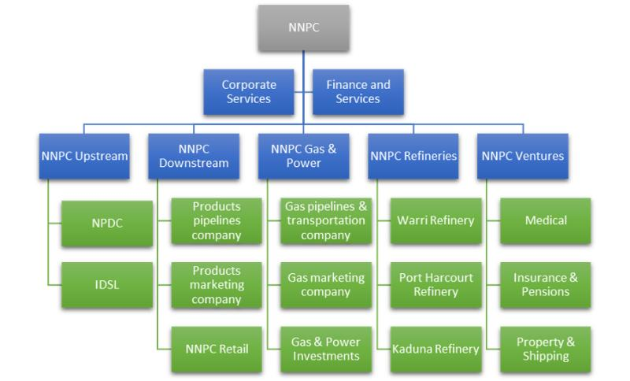
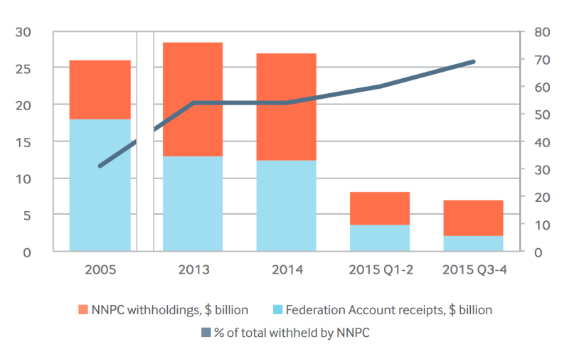

<div class="row" id="title" >
	<div class="col-lg-6 col-lg-offset-3 col-md-8 col-md-offset-2 output-content">
		<div class="social-buttons-small">
		<a class="btn btn-extractives btn-home" href="http://code4sa.org/offshore-oil"><i class="fa fa-home" aria-hidden="true"></i></a>
		    <a target="_blank" class="btn btn-facebook btn-share-small hidden-lg hidden-md" href="http://www.facebook.com/sharer/sharer.php?u=http://www.code4sa.org/offshore-oil"><i class="fa fa-fw fa-facebook-official" aria-hidden="true"></i> Share</a> <a target="_blank" class="btn btn-twitter btn-share-small hidden-lg hidden-md" href="https://twitter.com/intent/tweet?text=www.code4sa.org/offshore-oil"><i class="fa fa-fw fa-twitter" aria-hidden="true"></i> Tweet</a>
		</div>
		<h3 class="output-title">Nigeria: Petroleum Legislation and Offshore Analysis</h3>
		<div class="well">
			<h4><b>Table of contents</b></h4>
			<div class="no-chapter"><a href="#acronyms">Acronyms</a></div>
		    <div class="no-chapter"><a href="#introduction">Introduction</a></div>
		    <ol>
		    	<li><a href="#chapter-1">The Petroleum Industry Bill (PIB) and the Petroleum Industry Governance and Institutional Framework (PINGIF) bill</a></li>
		    	<li><a href="#chapter-2">Data Analysis</a></li>
		    	<li><a href="#chapter-3">Legal Investigations and Prosecutions</a></li>
		    	<li><a href="#chapter-4">Interviews with Industry Experts</a></li>
		    </ol>
			<div class="no-chapter"><a href="#bibliography">Bibliography</a></div>
			<div class="no-chapter"><a href="#appendix-a">Appendix A. Semi-Structured Questionnaire</a></div>
			<div class="no-chapter"><a href="#appendix-b">Appendix B. APC Policy Commitments</a></div>
		</div>
		<h4 id="acronyms" class="output-chapter">Acronyms <a class="to-top" href="#title"><i class="fa fa-arrow-circle-o-up" aria-hidden="true"></i></a></h4>
		<table class="table table-condensed table-striped">
		    <tbody>
			    <tr>
			        <td style="border-top-width: 0px; height: 0; padding: 0"></td>
			        <td style="border-top-width: 0px; height: 0; padding: 0"></td>
			    </tr>
		        <tr>
		            <td style="border-top-width: 0px;">CISLAC</td>
		            <td style="border-top-width: 0px;">Civil Society Legislative Advocacy Centre</td>
		        </tr>
		        <tr>
		            <td>DGSO</td>
		            <td>Domestic Gas Supply Obligations</td>
		        </tr>
		        <tr>
		            <td>DPR</td>
		            <td>Department of Petroleum Resources</td>
		        </tr>
		        <tr>
		            <td>ECA</td>
		            <td>Excess Crude Account</td>
		        </tr>
		        <tr>
		            <td>EFCC</td>
		            <td>Economic and Financial Crimes Commission</td>
		        </tr>
		        <tr>
		            <td>FAAC</td>
		            <td>Federal Account Allocation Committee</td>
		        </tr>
		        <tr>
		            <td>GMD</td>
		            <td>Group Managing Director</td>
		        </tr>
		        <tr>
		            <td>IOC</td>
		            <td>International Oil Company</td>
		        </tr>
		        <tr>
		            <td>NCC</td>
		            <td>Nigerian Communications Commission</td>
		        </tr>
		        <tr>
		            <td>NDDC</td>
		            <td>Niger Delta Development Commission</td>
		        </tr>
		        <tr>
		            <td>NEITI</td>
		            <td>Nigerian Extractive Industries Transparency Initiative</td>
		        </tr>
		        <tr>
		            <td>NERC</td>
		            <td>Nigerian Electricity Regulatory Commission</td>
		        </tr>
		        <tr>
		            <td>NGMP</td>
		            <td>Nigerian Gas Master Plan</td>
		        </tr>
		        <tr>
		            <td>NGO</td>
		            <td>Non Governmental Organisation</td>
		        </tr>
		        <tr>
		            <td>NNPC</td>
		            <td>Nigerian National Petroleum Corporation</td>
		        </tr>
		        <tr>
		            <td>NOC</td>
		            <td>National Oil Company</td>
		        </tr>
		        <tr>
		            <td>NPAM</td>
		            <td>Nigerian Petroleum Asset Management Company</td>
		        </tr>
		        <tr>
		            <td>NPDC</td>
		            <td>Nigerian Petroleum Development Company</td>
		        </tr>
		        <tr>
		            <td>NPRC</td>
		            <td>Nigerian Petroleum Regulatory Commission</td>
		        </tr>
		        <tr>
		            <td>NSIA</td>
		            <td>Nigeria Sovereign Investment Authority</td>
		        </tr>
		        <tr>
		            <td>OGIC</td>
		            <td>Oil and Gas Sector Reform Implementation</td>
		        </tr>
		        <tr>
		            <td>OML</td>
		            <td>Oil Mining Lease</td>
		        </tr>
		        <tr>
		            <td>OPA</td>
		            <td>Offshore Processing Agreements</td>
		        </tr>
		        <tr>
		            <td>OPL</td>
		            <td>Oil Prospecting Lease</td>
		        </tr>
		        <tr>
		            <td>OPTS</td>
		            <td>Oil Producers Trade Section</td>
		        </tr>
		        <tr>
		            <td>OSP</td>
		            <td>Official Selling Price</td>
		        </tr>
		        <tr>
		            <td>PIB</td>
		            <td>Petroleum Industry Bill</td>
		        </tr>
		        <tr>
		            <td>PINGIF</td>
		            <td>Petroleum Industry Governance and Institutional Framework</td>
		        </tr>
		        <tr>
		            <td>PPMC</td>
		            <td>Pipelines and Product Marketing Company</td>
		        </tr>
		        <tr>
		            <td>PPPRA</td>
		            <td>Petroleum Products and Pricing Regulatory Agency</td>
		        </tr>
		        <tr>
		            <td>PSC</td>
		            <td>Production Sharing Contract</td>
		        </tr>
		        <tr>
		            <td>RMAFC</td>
		            <td>Revenue Mobilisation Allocation and Fiscal Commission</td>
		        </tr>
		        <tr>
		            <td>RP</td>
		            <td>Realised Price</td>
		        </tr>
		        <tr>
		            <td>RPEA</td>
		            <td>Refined Products Exchange Agreements</td>
		        </tr>
		    </tbody>
		</table>
		<h4 id="introduction" class="output-chapter">Introduction <a class="to-top" href="#title"><i class="fa fa-arrow-circle-o-up" aria-hidden="true"></i></a></h4>
		<p>
			This report provides a concise analysis and assessment of three key areas of the
			Nigerian petroleum sector: firstly the Petroleum Industry Bill (PIB) in the historical
			context of the past 15 years, the political context of the last 12 months of the Buhari
			administration and finally in terms of the current draft Petroleum Industry Governance
			and Institutional Framework (PINGIF) bill which replaces the institutional aspects of
			the PIB; secondly, the current quality of data concerning the petroleum sector
			(specifically in terms of onshore vs. offshore oil) and thirdly events and outcomes of
			significant recent legal activity in the sector.<br><br>

			This assessment is complemented by relevant transcriptions from interviews with
			industry experts as well as a categorised bibliography. The report was developed
			and drafted after a period of initial background reading (and reading of contemporary
			news/analysis) followed by interviews with industry experts based on a semistructured questionnaire (<a href="#appendix-a">see Appendix A</a>) followed by updating relevant sections of
			the report. For the interviews, to ensure consultations were not protracted, experts
			were invited to focus on questions they were both most interested and best informed
			to respond to.
		</p>

		<h4 id="chapter-1" class="output-chapter">1. The Petroleum Industry Bill (PIB) and the Petroleum Industry Governance and Institutional Framework (PINGIF) bill <a class="to-top" href="#title"><i class="fa fa-arrow-circle-o-up" aria-hidden="true"></i></a></h4>
		<p>
			This section investigates and analyses the PIB from an historical, political, financial
			and regulatory perspective, assessing onshore vs. offshore aspects. The section
			also plays devils advocate from a corporate, federal and state government, NGO and
			investors perspective in terms of tax, geology and regulatory perspective. While the
			PIB has now been broken up into separate pieces of legislation, beginning with the
			institutionally-oriented Petroleum Industry Governance and Institutional Framework
			(PINGIF) bill currently being discussed in the National Assembly, it is still worth
			assessing the issues raised through the PIB process, as they are likely to re-appear
			across the new legislative track.<br><br>

			Successive Nigerian government administrations have tried to reform the petroleum
			sector, with limited success. For the past fifteen years, the reform has centred on
			policy and legislation (rather than the institutional reform promised by the PINGIF
			bill). The policy and legal reform process began with the formation of the Oil and Gas
			Sector Reform Implementation Committee (OGIC) under President Obasanjo in 2000
			under the Chairmanship of Dr. Rilwanu Lukman then serving as the Presidential
			Adviser on Petroleum and Energy. {{1}}<br><br>

			By 2004, the OGIC had developed a national oil and gas policy, which covered
			upstream, midstream, downstream and also petrochemicals. The OGIC was
			reconstituted under President Yar’Adua in 2007, and the first draft of the PIB was
			prepared and circulated under his administration. In simple terms, this draft
			legislation separated the national oil company (currently, the Nigerian National
			Petroleum Corporation - NNPC) from the regulator, set new fiscal provisions and
			addressed community issues. The Jonathan government continued with further
			drafts of the PIB, and on one reading began to prepare the NNPC for
			commercialisation as a standalone national oil company by setting up the so-called
			“strategic alliances” between the Nigerian Petroleum Development Company (NPDC)
			and local oil firms, to take over the onshore assets divested by Shell and other
			International Oil Companies (IOCs). However, despite the president and his oil
			minister being from the Niger Delta, the PIB was not passed during the Jonathan era.<br><br>

			The reform process could have gone otherwise. During the era of high oil prices, the
			Production Sharing Contracts (PSCs) could have been renegotiated to increase
			government take. The three the three “re-opener” conditions – of the price of oil
			rising above $20 per barrel, mega discoveries of reserves above 500 million barrels
			and more than ten years period since the signing of the contract all obtained.
			Alternatively, the Yar-Adua and Jonathan governments could have focused on
			restructuring the NNPC and institutional reform. Another option would have been to
			agree a strategic policy framework and an over-arching “petroleum master plan” (as
			happened in the energy sector). Instead, since 2007, the PIB itself became the
			battleground for policy disputes, principally between the government, which wanted
			to shore up discretionary power and government take, the IOCs through the local
			trade body the Oil Producers Trade Section (OPTS) and to a lesser extent local
			companies belonging to the Lagos Oil Club.<br><br>

			What are the most salient private sector issues that blocked the passage of the bill?
			Referencing the consulting firm McKinsey’s “Commentary on the Petroleum Industry Bill” 
			(produced in 2013 but not publicly available), which itself draws on and develops
			the 2009 OPTS Memorandum on the PIB {{2}}, we can note the following critical
			comments:<br>
		</p>
		<ul>
			<li>
				The PIB seeks to replace sixteen existing laws and establish seven new
				institutions. Industry analysts anticipate eighty new regulations will also be
				required. This effectively replaces one regulatory minefield with another.</li>
			<li>
				The increase in total government take from existing arrangements to post PIB
				is 70% to 96% – making the Nigeria the least competitive country in the world
				in terms of deepwater fiscal regimes. This shows that the predatory dynamic
				that emerged within the Babangida regime is still present within more recent
				administrations
			</li>
			<li>
				The PIB has no recourse to international arbitration in the case of disputes.
				This shores up discretionary power with the presidency, is contrary to
				international good practice and is a significant negative signal for investors</li>
			<li>
				The PIB stipulates a shorter lease life (7 years development period for a
				Petroleum Mining Lease). The average global timeframe is 11 years from
				discovery to production
			</li>
			<li>
				The PIB does not protect existing contracts from the new terms. Yet again,
				this may trigger a loss of investor confidence in Nigeria
			</li>
			<li>
				Domestic Gas Supply Obligations (DGSOs) in the PIB (in line with the Nigeria
				Gas Master Plan (NGMP)) are not supported by an adequate gas supply
				infrastructure or by power plant demand
			</li>
			<li>
				The PIB switches crude measurement from the export terminal (current
				practice in Nigeria) to the wellhead. This leaves producers exposed to paying
				tax on stolen crude
			</li>
			<li>
				The PIB sets up a Petroleum Host Community Fund, supported by 10% of net
				profits. This overlaps with the Niger Delta Development Commission (NDDC)
				payments and does not have a specified governance structure. Competition
				between communities to obtain “host community” status has led to conflict
				and violence in the past in Nigeria
			</li>
			<li>
				Industry experts estimate that the PIB will lead to a 40% decrease in
				production by making various projects uneconomic. Most significantly, no
				new deepwater projects will be financially viable, 90% new gas projects will
				not viable and 30% of new JV oil projects will not be viable
			</li>
		</ul>
		<p>
			It should be noted that local oil companies did not raise strong objections to the PIB,
			presumably because they stand to benefit from the very discretionary processes that
			remain in the draft legislation (or alternatively, that they had much to lose by
			speaking out).<br><br>

			In terms of royalty rates and a fiscal regime, successive versions of the bill
			introduced different frameworks. For instance, the 2011 iteration prescribed a
			progressive royalty linked to production rates and oil prices with differentiations for oil
			and gas. In contrast, the 2012 update (the most recently available draft), stated (in
			clause 197) that, “There shall be paid in respect of licences, leases and permits
			under this Act such royalties, fees and rentals as may be contained in this Act and in
			any regulations made by the Minister pursuant to this Act.” There was in other
			words no explicit reference to specific royalty rates in the main fiscal provisions
			clause, or elsewhere in the PIB. However the savings provisions indicate the
			existing royalty rates will continue to apply pending new regulations by the Minister.
			There was speculation at the time about the royalty regime that would subsequently
			be proposed, along the lines that,
		</p>
		<blockquote>
			“Information from official sources suggests that the minister is considering a new
			royalty regime which would replace the existing single-tier royalty regime with a twotier regime, where the total royalty would be an aggregate of two distinct royalties:
			the royalty by average daily production plus the royalty by value based on price.
			Under the two-tier regime, production from all fields would attract royalties. The
			significant impact would be that producers from deep offshore fields which currently
			pay no royalties would become liable to pay royalties.” {{3}}
		</blockquote>
		<p>
			We can contextualise discussions around royalty rates in the PIB with a quick
			international comparison: {{4}}
		</p>
		<table class="table table-condensed table-striped">
		    <tbody>
			    <tr>
			        <td style="border-top-width: 0px; height: 0; padding: 0; width:112px "></td>
			        <td style="border-top-width: 0px; height: 0; padding: 0"></td>
			    </tr>
		        <tr>
		            <th style="border-top-width: 0px;">Country</th>
		            <th style="border-top-width: 0px;">Royalty Rate</th>
		        </tr>
		        <tr>
		            <td>Argentina</td>
		            <td>12% of wellhead value</td>
		        </tr>
		        <tr>
		            <td>Australia</td>
		            <td>Between 10-12.5%, depending on size of acreage</td>
		        </tr>
		        <tr>
		            <td>India</td>
		            <td>Onshore: 12.5%; shallow water: 10%; deepwater: 5% (for first 7 years of commercial production, 10% thereafter)</td>
		        </tr>
		        <tr>
		            <td>Kuwait</td>
		            <td>15%</td>
		        </tr>
		        <tr>
		            <td>Mexico</td>
		            <td>If oil price is below US$48 per barrel, a royalty rate of 7.5% is applicable; when the price is equal to or higher than US$48 per barrel, the royalty rate is determined according to this formula: [(0.125 x Oil Contract Price) + 1.5]%.</td>
		        </tr>
		        <tr>
		            <td>Nigeria (current)</td>
		            <td>Onshore &amp; shallow offshore: 20%; offshore up to 100m: 18.5%; offshore 100-200m: 16.67%; deep offshore, inland basin: 10%; 201 to 500m: 12%; 501 to 800m: 8%; 801 to 1000m: 4%; 1000m+: 0%</td>
		        </tr>
		        <tr>
		            <td>Saudi Arabia</td>
		            <td>Royalty rate stipulated in each petroleum concession agreement</td>
		        </tr>
		        <tr>
		            <td>US</td>
		            <td>18.75% regardless of depth on federal offshore seabed (although there are some royalty-free leases in the Gulf of Mexico)</td>
		        </tr>
		        <tr>
		            <td>Venezuela</td>
		            <td>30% (may be reduced to 20% if oil field is otherwise not economically exploitable)</td>
		        </tr>
		    </tbody>
		</table>
		<p>
			In terms of what a recommended royalty rate should be for Nigeria, the focus should
			above all be on simplicity. Nigeria’s fiscal regime, along with other aspects of
			governance arrangements, are currently too complex and add yet another layer of
			opacity to the sector. A flat royalty rate, say of 15% across all fields (in line with
			Kuwait) can be recommended. Deep offshore (1000m+) attracted no royalty at a
			time when these fields were unproven. While still far more expensive to produce oil
			at this depth (in comparison to onshore and shallow offshore), the deep offshore
			reserves are vast. The caveat for recommending a flat 15% rate is that it must be
			placed in an overall fiscal context and present a globally competitive total
			government take, especially given the negative connotations often associated with
			the petroleum sector in Nigeria.<br><br>

			While formal engagement with private oil companies was weak during the Yar-Adua
			and Jonathan years, lobbying and influence behind the scenes was at times been all
			pervasive. Former Shell Nigeria chief Ann Pickard admitted in private to an
			American Ambassador that “Shell had seconded people to all the relevant ministries
			and that Shell consequently had access to everything that was being done in those
			ministries.” {{5}}<br><br>

			This highlights a key political timeframe issue in Nigeria. Policy and legal reform in
			such a mature and labyrinthine sector can hardly be completed within one four year
			term of government, given the complexities, legacy issues and local and international
			vested interests.<br><br>

			Despite Shell’s longstanding history in Nigeria and at times close relationship with
			federal government officials, as noted above, the company has been divesting its
			onshore assets in the past few years as part of a strategic review process, which
			began in 2010 in the face of mounting security risks and loses. The company has
			suffered more than all others operating in Nigeria from pipeline vandalism, militant
			attacks and oil theft, losing $1bn in 2013 alone due to sabotage. Shell sold eight
			blocks for a total of $2.7bn in 2012. Shell’s divestment was part of a trend. In the
			same year, Conoco Phillips sold its stake in the Brass LNG project as well as other
			upstream assets and a power plant to local company Oando for $1.79bn. In the past
			five years, the IOCs switched their focus to more secure and operationally
			straightforward deep offshore operations.<br><br>

			These divestments presented an opportunity for Nigerian oil firms to step in and
			continue to develop the fields in the name of local content. Several local companies,
			such as Oando, Sahara and Seplat (as well as older players such as Conoil) became
			well established under Jonathan and poised for growth. However, revelations in
			early 2014 by the former governor of the Central Bank, Sanusi Lamido Sanusi, that
			there was a $20bn shortfall in oil revenues from the NNPC to the treasury through a
			range of bad practices (such as a fixed domestic crude allocation, crude oil swaps,
			revenue retention by the NNPC and so on) highlighted there had likely been massive
			oil theft. {{6}} This was on the back of the fuel subsidy crisis in 2012 (the federal
			government attempted to remove the fuel subsidy without warning on January 1st of
			that year, effectively more than doubling the price of fuel (from 65 naira a litre to at
			least 141 naira). The subsequent massive street protested led to a period of panic in
			government, which in turn led to a series of probe committees and reports to
			examine suspected massive corruption in the subsidy scheme. {{7}}<br><br>

			The focus on applying more discipline under Buhari, in the era of lower oil prices and
			a less forgiving (and generous) attitude by a northern President towards unrest in the
			Niger Delta, raises the question of whether the burgeoning Nigerian onshore local
			content success story of a few years ago may continue, and what prospects there
			are for onshore oil in Nigeria going forwards, beyond the existing joint venture
			operations. While onshore (and shallow offshore) oil remains technically the most
			cost effective option in Nigeria (in contrast to deep offshore, which at this stage in the
			market is an investment challenge, even given the high prospectivity of certain
			acreages), local companies bought their assets at the highest possible valuation;
			some are over-leveraged and facing financial difficulties. Certainly, the fate of the
			two more dubious NPDC strategic alliance partners - Atlantic Energy and a
			subsidiary of Seven Energy – looks doubtful, with Atlantic energy already put up for
			sale, and a preferred bidder identified. As one industry expert interviewed for this
			report noted,
		</p>
		<blockquote>
			“Local content became a byword for corruption, and the whole concept was totally
			abused. That should be combined with the fact that Buhari just cannot stand corrupt
			Nigerian businessmen. He feels more comfortable with foreigners. If he is doing
			anything with the private sector, just look at the oil lifting contracts. He’s definitely
			veering more towards the IOCs and more towards the big international traders. From
			that point of view, you could argue that he is rolling back the local content that
			developed previously. Instinctively he would replace that local content with state
			institutions because of his aversion to a corrupt private sector. But, he is also
			mindful I think, but not mindful enough, that state institutions can also be hijacked for
			corrupt purposes.”
		</blockquote>
		<p>
			However, Buhari’s possible aversion to reinvigorating the local content story needs to
			be set against a possible reaction to his attempt at an uncompromising stance in the
			Niger Delta. The recent bombing of the underwater Forcados pipeline – itself
			showing signs of a sophisticated approach to sabotage – is a clear message from the
			Niger Delta that a former military general will not be able to use the top-down power
			of the state to enforce security and stability in the Niger Delta. {{8}}<br><br>

			The choices facing the Buhari administration have been stark. Unlike the previous oil
			price drop in 2009, there has been no fiscal buffer available to smooth out falling
			revenues from the falling price shock (the Excess Crude Account – a fund to collect
			oil revenues above the benchmark price set in the annual budget – had been
			emptied under Jonathan). Many states in Nigeria were considered (by Sanusi
			among others) to not be economically viable during high oil prices; so much more so
			when their revenue allocations have been dramatically cut more recently. The
			revenue-generating proposal to sell or incorporate some of the joint-venture assets
			would face both philosophical resistance from a president who may regard those
			assets as national patrimony, and economic resistance in terms of the potential
			future accusation of selling assets at a low price (assuming the oil price rises in the
			years to come).<br><br>

			Again, lower foreign exchange oil revenues to government have put the naira under
			immense pressure; Buhari has staunchly refused to devalue, leading to a yawning
			divergence between the official Central Bank naira exchange rate and the black
			market rate. Meanwhile, foreign reserves have dropped to their lowest level in years,
			presently around $27bn. Those who considered Nigeria to be a leading component
			of the “Africa Rising” narrative have been dealt a harsh lesson in the fragility of the
			non-oil economy (and the underlying linkages between the non-oil economy and
			petroleum).<br><br>

			Above all, the policy and legislation approach of the past fifteen years of reformist
			effort has ended in stalemate. Buhari, the former oil commissioner in the late 1970s,
			appointed himself the Minister of Petroleum (as Obasanjo had done during his two
			terms in office from 1999-2007) and appointed former Executive Vice Chairman of
			ExxonMobil Africa Operations, Emmanuel Kachikwu, as his junior minister (Kachikwu
			had previously been appointed group managing director (GMD) of the NNPC in
			August 2015).<br><br>

			While President Buhari has made numerous remarks about revamping local refining
			capacity (a favoured topic from his time as petroleum commissioner), Kachikwu has
			focused so far on internal reform of the NNPC. In March 2016, he announced that
			the NNPC has been restructured into seven coordinating units: an upstream unit, a
			downstream unit, a refinery unit, a gas & power unit and one responsible for other
			ventures. {{9}} In addition, he outlined a group-wide corporate services unit, as well as a
			finance and services company. Each new unit is responsible for existing NNPC
			subsidiaries and each will be led by a chief executive officer.<br><br>

			<br>
			<b>Figure 1 The new-look NNPC</b><br><br>

			What was noteworthy about Kachikwu’s restructuring announcement in March was
			what he didn’t say: he made no mention of the successor to the PIB, the PINGIF bill
			(drafted by the Nigerian Senate and about to be discussed in both the Senate and
			the National Assembly {{10}}). This prompts speculation about the extent to which the
			executive holds replacement legislation to be a priority (in contrast to the National
			Assembly), compared to more tangible issues such as the fuel shortage in Nigeria
			and revamping the refineries (through privatisation) to lesson the leverage of
			petroleum product importers. {{11}} The most optimistic view is that the National
			Assembly and the executive are working in sync, based on an agenda set by the
			Senate but agreed to in general terms by the President. The PINGIF would therefore
			be the first in a series of up to five bills in total (the others addressing the fiscal
			regime, upstream, downstream and gas), that, given a closely sequenced or even
			simultaneous approach (with different bills presented to their specifically National
			Assembly committees) could even all be passed during this parliament. Observers
			suggest that the punitive hike in royalty rates that created resistance during the 
			PIBera would likely not be repeated in the fiscally-focused bill, and suggest that the more
			strategic approach in evidence with the PINGIF may be repeated with a progressive
			royalty system linked to oil prices, in place of flat percentages.<br><br>

			However, this hope of a completed package of legislation may be idealistic, based
			upon the prior performance of the National Assembly, but also on internal sabotage
			factors (which may explain some uncertainty in Kachikwu’s recent communication of
			the restructuring of the NNPC). What will be interesting will be to track performance
			and decision making in petroleum sector governance against APC policy objectives
			(summarised in Appendix 2 of this report).<br><br>

			Already, informed industry watchers in Nigerian civil society have noted an absence
			of enthusiasm for the more difficult task of industry restructuring based on legal
			reform. As the executive director of well reputed Abuja-based NGO CISLAC, Auwal
			Ibrahim Musa (known as Rafsanjani) has noted,
		</p>
		<blockquote>
			“CISLAC recalls that the Minister for State Petroleum Resources, Dr. Ibe Kachikwu,
			said that Nigeria is losing $15 billion (N3trillion) annually due to non-passage of the
			Petroleum Industry Bill (PIB) into law. We note that despite the restructuring going on
			the in the NNPC, the fundamental surgery that is required for the sector to be
			effective and accountable can only be found with the passage of this law which has
			been elusive for the past 12 years,” Rafsanjani said. {{12}}
		</blockquote>
		<p>
			It may be that both Buhari and Kachikwu are mindful that by 2018, the election
			season will have started in earnest and are keen to avoid repeating the timeconsuming 
			errors of the PIB process by focusing on non-legal reform upstream and
			downstream and more practical efficiencies (Kachikwu fired eight executive directors
			of the NNPC when he became its boss). In that regard, they may become
			increasingly at loggerheads with parliamentarians and civil society activists.
			Nonetheless, the PINGIF is a relatively short (45 page) document which avoids the
			problematic aspects of the PIB summarised above. A focused joint effort by the
			National Assembly could agree on a uniform draft and submit to the President for
			review. It is therefore worthwhile providing an initial if cursory assessment, with a
			note of caution that the PINGIF may still go the way of the PIB.<br><br>

			The most notable components of the Petroleum Industry Governance and
			Institutional Framework bill are:<br>
		</p>
		<ol>
			<li>
				The establishment of a new regulatory body - the Nigerian Petroleum
				Regulatory Commission (NPRC). The NPRC issues, renews and can cancel
				licences, permits and authorisations among other operations. The NPRC is
				to some degree modelled on Nigeria’s electricity and communications
				commissions (NERC and the NCC). The NPRC would regulate upstream
				and downstream operations, effectively merging the existing quasiindependent 
				regulator - the Department of Petroleum Resources (DPR) and
				the NNPC’s Petroleum Products and Pricing Regulatory Agency (PPPRA).
				The idea is for the NPRC to have full independence from government to allow
				decisions to be taken without discretionary political influence. Decisions made
				by the NPRC must be in writing, include the basis for the decision and be
				publicly available (all good accountability measures). Nonetheless, the
				current draft of the PINGIF has the President appointing key board roles.
			</li>
			<li>
				The creation of two companies to replace the NNPC - the National Oil
				Company - somewhat confusingly retaining the same NNPC name - and the
				Nigerian Petroleum Asset Management Company (NPAM). The national oil
				company will take on the NNPC’s joint venture obligations and operate as a
				commercial entity, with responsibility for its own budget and cash call
				obligations. It will also be partly privatised (with at least 30% equity divested
				within six years of incorporation). The idea is that the NNPC becomes an
				internationally competitive oil company (along the lines of Statoil or Petronas)
				with the associated technology and efficiency of these firms. It will pay
				dividends from its operations to the federation account in addition to royalty
				and taxes. The NPAM will own and manage petroleum assets that do not
				require upfront cash calls on behalf of the government (i.e. the PSCs). Unlike
				the new national oil company, the NPAM will not directly take part in
				petroleum operations.
			</li>
			<li>
				The creation of a Special Investigation Unit within the NPRC with the powers
				to seize items and make arrests without a warrant anyone found committing
				an offence under the PINGIF.
			</li>
			<li>
				Substantive limits on ministerial powers (when compared to the PIB), with the
				Ministry of Petroleum Resources left to focus on policy direction and
				development.<br><br>
			</li>
		</ol>
		<p>
			While breaking the PIB up into its constituent parts, beginning with institutional
			restructuring package that is light on detail appears to be learning a painful 15 year
			lesson, the key contentious aspects of the PIB remain in store for future legislation
			(and most likely a future administration). The key missing elements are:<br>
		</p>
		<ul>
			<li>
				A new fiscal regime: will there be a change from the 96% government take
				proposed in the PIB?
			</li>
			<li>
				The role of the new national oil company, how they will receive and manage
				money
			</li>
			<li>
				Whether the PIB’s proposed Petroleum Host Community Fund will remain,
				and clarifications on its governance structure (and how it will avoid replication
				with the NDDC)
			</li>
			<li>
				What will happen with excess oil revenues (for instance, a replacement of the
				Excess Crude Account, and the formal relationship with the Nigeria Sovereign
				Investment Authority (NSIA)
			</li>
			<li>
				The discretionary powers of the President to allocate blocks over and above
				any licensing round (a much criticised aspect of the PIB)
				Any reference to international arbitration
			</li>
			<li>
				The question of a shorter lease life, the protection of existing contracts from
				the new terms and Domestic Gas Supply Obligations (all pointed out by the
				OPTS)
			</li>
			<li>
				Crude measurement at the wellhead rather than the export terminal. This is a
				crucial issue in terms of accuracy of production volumes, but strongly
				contested by the IOCs, who fear being charged royalties on crude stolen via
				pipeline networks
			</li>
			<li>
				Oil revenue allocations across the states: will there be any changes to the
				derivation formula (so that, for example, oil producing states take a larger
				percentage of set-aside revenue?)
			</li>
		</ul>
		<p>
			Even the relatively modest aims of the PINGIF will not be guaranteed a smooth ride,
			either through the National Assembly (assuming the law can be passed and signed
			off by the President during this parliamentary term) or in terms of its subsequent
			implementation (likely to begin in earnest only after the 2019 elections). The new
			NNPC will still be one of Nigeria’s largest companies and a source of patronage,
			which means there is likely to be strong internal resistance to change within the
			organisation. In addition, the more commercially-focused and autonomous national
			oil company will have to compete with more established IOCs (and the best of the
			local companies) to attract skilled workers – in short supply in (and from) Nigeria.
			Quite apart from these technical issues will be the legacy perception of a Nigerian
			national oil company (even after a rebrand), especially given more established
			national oil companies have suffered tarnished reputations in recent months. Finally,
			the new regulator will be in charge of the pricing of petroleum products (a sensitive
			issue, as the street protests of 2012 showed) and just like the electricity regulator
			NERC, become vulnerable to politicisation once again.
		</p>

		<h4 id="chapter-2" class="output-chapter">2. Data Analysis <a class="to-top" href="#title"><i class="fa fa-arrow-circle-o-up" aria-hidden="true"></i></a></h4>
		<p>
			This section investigates and analyses existing data from the NNPC, Central Bank,
			FIRS, and other data sources, focusing on availability of information and the most
			significant leakages in the system, which occur through oil sales revenues. This
			section identifies contradictions within and between data-sharing, accuracy and
			integrity.<br><br>

			One of the junior minister Kachikwu’s early achievements as Group Managing
			Director of the NNPC (before being appointed junior minister) was the publication of
			monthly performance data reports, which began in August 2015 (at the time of writing
			this report, six have now been published, up to January 2016). {{13}} All Annual
			Statistical Bulletins since 1997 have also now been published. {{14}} The NNPC also
			announced, in its December monthly report, that it will produce an annual report in
			the second quarter of 2016, which will provide information on NNPC’s corporate
			governance, operational activity and financial performance. This marks a new era of
			transparency for the NNPC, after over a decade of non-reporting. As an NNPC
			spokesman has said, “Before, nobody could even see what our books were like,
			whether we were operating at a loss or . . . at a profit. It’s a new NNPC. We want to
			be as transparent as possible.” {{15}} The monthly reports follow a standardised format
			and provide data on crude oil and gas production, domestic supply of crude, refinery
			operations, petroleum products supply from Offshore Processing Agreements (and
			monthly sales revenues), group financial performance, crude and gas sales revenue,
			financial flows to the Federation Account and to the Federal Account Allocation
			Committee (FAAC) – the body which allocates revenue to the states on the basis of
			an agreed revenue sharing formula - as well as a closing sundry section on “Key
			Determinants for Change”.<br><br>

			The December report shows the difficulties the NNPC has with its own accounts (the
			NNPC has previously been described as “unauditable” {{16}}). For instance, a table on
			the Naira proceeds from the sale of domestic crude oil & gas shows a total sales
			value of 1.67tn naira, with only 1.01tn available in receipts (i.e. over 600 billion naira
			unaccounted for). {{17}} The overall financial performance of the NNPC in the December
			monthly report shows that the company ran at a loss of over 267 billion naira (up to
			November and unaudited). This reflects the lack of independent budget control the
			NNPC has over its finances, particularly in terms of crude oil sales. Sanusi’s
			“missing $20bn” (which became a catchphrase on Nigerian social media) was further
			refined in March 2016 after Nigeria’s auditor general submitted a report to the
			National Assembly stating that the NNPC had failed to remit $16bn in oil sales to the
			treasury for 2014 alone. {{18}} According to section 162 of the Nigerian constitution, oil
			revenues must be remitted to the Federation Account (minus expenses), with
			operating costs covered by the annual national budget. However, successive GMDs
			have succumbed to political pressure to divert oil sales revenue for other purposes.<br><br>

			The following week, the Revenue Mobilisation Allocation and Fiscal Commission
			(RMAFC) joined in the attack, alleging that the NNPC has withheld $25bn from the
			treasury between 2011 and 2015. {{19}} The divergence in figures between different
			bodies highlights the difficulty in tracking down how much revenue has leaked out of
			the NNPC. These leakages also do not account for the up to 250,000 barrels per
			day of Nigerian oil lost through criminal theft. {{20}}<br><br>

			The most comprehensive report so far on crude oil sales to date has been the
			Natural Resource Governance Institute’s (NRGI) August 2015 report, “NNPC Oil
			Sales: A Case for Reform in Nigeria”. {{21}} This report builds upon the PwC report
			published in February 2015 on unremitted oil sales proceeds (and the Memorandum
			to the Senate on non-remittance of oil revenues published by the former central bank
			governor {{22}} , commissioned by the Ministry of Finance and published through its
			parastatal, the Office of the Auditor General. {{23}} The NRGI report highlights five urgent
			problems associated with NNPC crude sales:<br><br>

			<b>1. The Domestic Crude Allocation (DCA)</b><br>
			The DCA was originally intended to ensure that sufficient Nigerian crude was set
			aside for local refining. 445,000 barrels per day are set aside for the NNPC to
			sell to its Pipelines and Product Marketing Company (PPMC) subsidiary.
			However, the country’s refineries can only process up to 100,000 barrels per
			day, which leaves over 300,000 barrels per day to re-route into oil-for-product
			swaps (payments for which go into separate accounts which are then available
			for NNPC officials to spend from freely). The NRGI report notes that for 2013,
			the Federation Account only received 58% of the $16.8bn value of domestic
			allocated crude. The report also notes that the amount retained by the NNPC
			had risen dramatically in recent years, up from 27% retention in 2004. The report
			recommends that the DCA fixed amount of domestic allocation be scrapped.<br><br>

			<b>2. NNPC Revenue Retention</b><br>
			The NNPC has no established method for financing its operations (and regularly
			is unable to fulfil its cash call obligations to the joint ventures with the IOCs). In
			conflict with Section 162 of the constitution, Section 7 of the NNPC Act enables
			the corporation to maintain a “fund” to cover its operational costs. The report
			notes that the NNPC retained revenues from the sale of 110 millions of barrels of
			oil from one block controlled by its subsidiary, the NPDC – worth $12.3bn alone.
			Furthermore, the relationship between the NNPC’s trading subsidiaries and its
			JVs with Swiss commodity traders is also opaque and has been described as a
			“financial black box.” {{24}} Again, proceeds from oil sales from the NPDC are not
			remitted to the treasury – the PwC report estimates $6.82bn in total earnings
			from this source in nineteen months between 2012 and 2013. The report
			recommends resolving the conflict between the constitution and the NNPC Act by
			providing clear rules on NNPC funding. As noted in the analysis above, the
			PINGIF would provide the basis for doing so, but there would need to be more
			detailed regulations on national oil company (and NPAM) funding to prevent a
			falling back into the current political patronage framework.<br><br>

			<b>3. Oil-for-product swap agreements</b><br>
			As noted above, surplus oil available from the PPMC via the DCA is available to
			be swapped for refined petroleum products. Under Offshore Processing
			Agreements (OPA), the contract holder is supposed to lift crude, refine it
			overseas and import the refined product back to the NNPC. This is nominally a
			good idea, given that the NNPC has lacked the cash to pay for imported fuel, but
			has crude available. The report notes that between 2010 and 2014, over $35bn
			of crude was sold in swap deals, with over 20% traded via poorly structured deals
			with just two companies. The NRGI estimates that losses from three provisions
			in a single contract could have resulted in losses of $381m in one year alone.
			The report recommends that the OPAs are scrapped, with the alternative
			mechanism of Refined Products Exchange Agreements (RPEA) used to deliver
			better returns. Under the RPEA, a trader is allocated crude, against which they
			are responsible for importing specified products worth the equivalent amount,
			minus expenses.<br><br>

			<b>4. The abundance of middlemen</b><br>
			The report notes a glaring problem with crude oil sales in Nigeria compared to
			international benchmarks: the country relies on selling its crude via trading
			companies, rather than directly to end-users (refineries overseas). “Nigeria is the
			only major world oil producer (i.e., producing more than one million barrels per
			day) not experiencing full-scale conflict that sells almost all of its crude to
			middlemen, rather than end-users.” These middlemen - who include politically
			exposed persons (PEPs) - often have no technical or even financial capacity,
			having been granted term contracts for political and patronage purposes. They
			rely on Swiss commodity traders to deliver on the transactions. The report
			recommends that term contracts be awarded through open, competitive tender
			using performance-based criteria, developing robust due diligence procedures
			that avoid payments to PEPs.<br><br>

			<b>5. Corporate governance, oversight and transparency</b><br>
			This section of the NRGI report is now a little out of date, given that the NNPC
			has now started producing monthly performance reports, has published its annual
			bulletins and is planning to publish an annual report later this year. Its
			recommendations on publishing data and commissioning regular external audits
			of the NNPC are already being actioned. However, its section on empowering
			accountability actors remains relevant:<br>
		</p>
		<ul>
			<li>
				“Require NNPC to establish clear performance benchmarks, for the year and
				for the medium-term. These should include spending levels, tied to the
				corporation’s actual budget proposals. NNPC should circulate these
				benchmarks to relevant government entities including the National Assembly
				(NASS), report against them on an annual basis, and use them as a basis
				against performance can be concretely assessed. This approach affords
				NNPC some autonomy (the NASS should not, for instance, get involved in
				various business decisions), while injecting some accountability into a system
				where it is sorely lacking.
			</li>
			<li>
				Clarify the extent of the Auditor-General of the Federation’s powers to audit
				NNPC, and have its reports published online.
			</li>
			<li>
				Expand the Accountant-General of the Federation’s role in reconciling and
				reporting on NNPC revenues, including oil sale revenues.
			</li>
			<li>
				Provide more resources and independence to the Economic and Financial
				Crimes Commission (EFCC), including its Oil and Gas Unit, to allow it to
				pursue high-level cases involving oil-related financial crimes.
			</li>
			<li>
				Ensure The Nigerian Extractive Industries Transparency Initiative (NEITI) has
				the funds, independence and mandate it needs to rigorously report on the full
				scope of NNPC operations and finances, and encourage NEITI to publish
				reports in a more timely fashion.” {{25}}
			</li>
		</ul>
		<p>
			The report also provides five important recommendations on addressing the NNPC’s
			underlying problems.
		</p>
		<ul>
			<li>
				Develop a plan for funding the JV cash calls
			</li>
			<li>
				Eliminate the fuel subsidy
			</li>
			<li>
				Remove the NNPC as a commercial player from the downstream sector
			</li>
			<li>
				Develop a roadmap for restructuring and commercialising the NNPC
			</li>
			<li>
				Develop a credible, politically backed action plan for tackling crude oil theft
			</li>
		</ul>
		<p>
			In an update published at the time of finalising the report (March 31st), the NRGI
			published an update suggesting that the core leakages within the NNPC remain, as
			indicated by the following republished chart. {{26}}

			<br>
			<b>Figure 2 NNPC withheld revenues on the rise</b><br><br>

			The most important and compendious source of data on the Nigerian oil sector in the
			past eight years has been via the Nigerian Extractive Industries Transparency
			Initiative (NEITI), the Nigerian implementation of the EITI. The most recent NEITI
			report was for the 2012 financial year, although it was released in 2015. The 2012
			report includes a 900-page appendix, which provides quite disaggregated information
			on especially royalty and petroleum profit tax contributions, though as discussed
			below the NEITI analysis is not without its own problems.<br><br>

			There is a general problem of under-assessment of royalty due in the case of PSC
			entities in the NEITI reports. The royalty computation for all PSC entities is a mere
			51% of the computation of NEITI; put differently, the under-assessment in 2012
			totalled US$ 366.2 million.<br><br>

			The NEITI notes in this regard that the “lingering price dispute has resulted in
			revenue loss of over US$ 4.04 billion in the last 7 years”. This is of course a very
			large (and quotable) amount; however, the phrase ‘revenue loss’ would only be
			applicable if indeed it turns out that the NEITI estimates are fully correct and
			objective. This is unlikely. The reality is that disputes exist over both which oil prices
			are applicable and which royalty rates are to be used, disputes which primarily
			suggest poorly drafted regulations, scant in crucial detail.<br><br>

			The gargantuan appendix to the NEITI 2012 (in excess of 900 pages) gives some
			sense of the nature and flavour of the dispute over the royalty computation which
			marred many key deepwater offshore operations at the time of the NEITI report. To
			give a sense of the issues, we summarise NEITI views and IOC comments thereon
			for Shell, Esso and Star Deep (i.e. Agbami) itself, all 3 of which exhibited significant
			divergence in royalty computations between NEITI and the IOCs.<br><br>

			<i>Royalty Contributions</i><br>
			The reconcilers appointed by NEITI noted that Star Deep did not pay any royalty in
			2012. In their view, the royalty amount due in 2012 was US$ 66.5 million. It is
			important to contextualise this assertion, however, by noting what seems a general
			problem of under-assessment of royalty due in the case of PSC entities.<br><br>

			The royalty computation for all PSC entities is a mere 51% of the computation of
			NEITI; put differently, the under-assessment in 2012 totalled US$ 366.2 million. In
			the case of Joint Ventures, by way of contrast, the operator computation is 98% of
			the NEITI one. The NEITI notes in this regard that the “lingering price dispute has
			resulted in revenue loss of over US$ 4.04 billion in the last 7 years”. This is of course
			a very large (and quotable) amount; however, the phrase ‘revenue loss’ would only
			be applicable if indeed it turns out that the NEITI estimates are fully correct and
			objective. This is unlikely. The reality is that disputes exist over both which oil prices
			are applicable and which royalty rates are to be used, disputes which primarily
			suggest poorly drafted regulations, scant in crucial detail.<br><br>

			The voluminous appendix to the NEITI 2012 (over 900 pages) gives a sense of the
			nature and flavour of the dispute over the royalty computation which marred many
			key deepwater offshore operations at the time of the NEITI report. To give a sense
			of the issues, we summarise NEITI views and IOC comments thereon for Shell, Esso
			and Star Deep (i.e. Agbami) itself, all 3 of which exhibited significant divergence in
			royalty computations between NEITI and the IOCs.<br><br>

			<b>Shell</b><br>
			Shell operates the Bonga deepwater offshore field, the first large such Nigerian field.
			There is a small difference (123 000 bbls) in production estimates by barrel between
			Shell and DPR for Bonga for 2012.The main issue, however, is the computation of
			the royalty due for these barrels, with the Shell computation being half that of the
			NEITI (USD 69.4 million vs USD 128.6 million). NEITI notes that Shell used a 1%
			royalty rate rather than the 1.75% ‘as stated by the DPR’. The response by Shell is
			worth quoting in full:
		</p>
		<blockquote>
			The reason for the difference between the royalty rate applied by NAPIMs in the tax
			return filed on behalf of the contract area and the rate applied by the contractor,
			SNEPCO, in the tax computation is due to the fact that ongoing negotiations between
			DPR and SNEPCO are yet to be concluded regarding the compromise/mutually
			acceptable royalty rate that should be applied for purposes of royalty computation
			and payment. The necessity for a mutually agreeable compromise arose because by
			virtue of the Section 61, subsection 1a, vii, of the Petroleum Act, Laws of the
			Federation of Nigeria, the applicable rate defined under the law for production in
			water depths beyond 1,000 metres, is actually zero percent. Considering that on the
			average the Bonga PSC is at water depths in excess of 1,000m, it would be
			expected that no royalty is payable from the Bonga PSC. However due to the
			practical fact that by nature, the sea bed is not static as obtains onshore, both DPR
			and SNEPCO recognised that there would be areas within the Bonga PSC that may
			be more or less than 1,000m water depth. Accordingly discussions commenced
			between both parties to ascertain the compromise royalty that should be applied.
			Unfortunately this has not been concluded and has formed part of the issues
			currently under dispute between NNPC and SNEPCO.<br><br>

			It is noteworthy that Section 61, subsection 2a and 2b, of the Petroleum Act, also
			recognises and supports that in the event of a dispute or disagreement as to royalty
			due, the tax payer is permitted to apply the rate it believes in pending resolution of
			the issue.
		</blockquote>
		<p>
			Presumably the values used (1% and 1.75%) constitute SNEPCO and DPR’s
			preferred values in the ongoing dispute. The issue appears to emanate largely from
			poor legislation and (presumably) an unclear actual oil contract. Be that as it may,
			the labelling of the difference in royalty due cannot simply be defined as ‘lost
			revenue’ in the manner done by NEITI.<br><br>

			<b>Esso</b><br>
			Esso is the operator for the deep water field Erha, which first streamed oil in 2006
			and which lies at a depth of around 1000 meters. There is (as with Shell) no dispute
			between Esso and DPR (the regulator) over oil production in 2012, which both
			parties agree was 45.7 million barrels. The royalty payable, however, is sizeably
			contested, with Esso computing USD 8.2 million and the NEITI auditors USD 52.1
			million. The NEITI uses the rate of 1%, referring to it as the ‘DPR Royalty Rate’.
			Again, presumably this is the rate the DPR is aiming for in negotiations, but does not
			appear to be a rate with a legislative mandate behind it.<br><br>

			It seems that the absence of clear provisions for dealing with different field depths
			generates different approaches, often quite disparate. Thus, Esso distinguishes
			between Erha Main and Erha North: the former’s depth exceeds 1000 meters and
			thus, Esso argues, no royalty is due, which would seem to be correct; in the case of
			Erha North, however, Esso mysteriously applies a rate of 0.331%, which it says is
			based on “exact measurement of water depth in the area covered”. This does not
			seem correct either: if Erha North is mainly or entirely shallower than 1000 meters
			then the rate should simply be the applicable percentage as per legislation.<br><br>

			However, even here in the phrasing ‘mainly or entirely’ one sees scope for
			disagreement, pointing again to the issue of a lack of clarity in the PSC legislation. It
			seems less an issue of dispute over water depth and more an issue pertaining to
			how the royalty is to be computed given variable depths of a field; the NEITI main
			report contains the following recommendations in this regard:
		</p>
		<blockquote>
			“The Ministry of Petroleum Resources should appoint an independent consultant who
			would confirm the accurate water depth level for these blocks and advise on an
			appropriate rate which should be agreed with the operators of the
			blocks…Alternatively, an amendment to the deep offshore and inland basin Act can
			be effected by the National Assembly to cater for the water depths in disputes.” {{27}}
		</blockquote>
		<p>
			In the case of Esso, and indeed most of the IOCs, a second contended issue leading
			to valuation differences concerns which oil price is to be deemed the applicable one
			for royalty and profit determination purposes, and specifically whether the Official
			Selling Price (OSP) or the Realised Price (RP) should be used; invariably, the IOCs
			use the realised price (that is the actual selling price) whilst NEITI uses the OSP, in
			essence an advance pricing agreement. A number of IOCs in the appendix
			discussions note that this is another issue currently under litigation.<br><br>

			However, the relevant provisions for PSCs in the Offshore Decree {{28}} seem clear
			enough, in preference of the realised price: “(1) The realisable price as defined in the
			production sharing contract established by the Corporation or the holder in
			accordance with the provisions of the production sharing contract, shall be used to
			determine the amount payable on royalty and petroleum profit tax in respect of crude
			oil produced and lifted pursuant to the production sharing contract.” The NEITI
			approach, on the other hand, is explained by them as follows: “The PPT Fiscal Value
			(i.e. Volume and Fiscal Price and volume set out in the company’s export template)
			was reconciled with Audit reconciled volume and also with DPR and terminal
			balances volumes. Fiscal value is to be determined on the basis of the higher of
			Official Selling Price (OSP) and Sales Proceeds. The OSP is a crude oil pricing
			method, which utilises average daily price of Dated Brent Spot. We applied the OSP
			premium and discount spread to the dated Brent values supplied by NNPC to derive
			the OSP.”<br><br>

			It may well be that applying the higher value of a futures price and a realised price is
			a preferable pricing method for royalties; certainly it would be preferable for the state,
			since it would get the higher of two royalty computations. However, this is hardly the
			issue. What is of concern is that basic policy parameters governing deepwater
			offshore, such as pricing methods, are currently contentious in Nigeria.<br><br>

			Turning finally to the Agbami field, and Star Deep as the operator, the same issues
			prevail according to the NEITI report: again there is no difference in estimates of
			barrels produced between the operator and the DPR, at 85 million. The dispute,
			however, arises from the fact that Star Deep did not pay any royalty, whilst the NEITI
			auditors argue that a 1% rate is applicable. Star Deep is the only deep water
			operator who paid no royalty, though this in all probability reflects the depths of
			Agbami, where not only the average depth but (presumably) all well depths are in
			excess of 1000 meters deep.<br><br>

			It is hard not to escape the conclusion that the efforts by the DPR to apply some form
			of royalty where, narrowly-legally speaking it would not seem to apply, are a belated
			effort to secure more gain from the deepwater offshore fields, given increased
			awareness of their lucrativeness. This is of course understandable, but it is not clear
			where the rates attributed to the DPR come from, or what their legal status might be.
			This reflects the weak institutional role of the DPR, as a non-autonomous regulator
			historically dependent on the NNPC for its revenues, and on oil company helicopters
			for access to facilities.<br><br>

			In terms of repercussions of wrong calculation of water depth i.e. if it is found that the
			oil companies had wrongly calculated the water depth over a period, it is likely that at
			least under the current administration, a penalty would be imposed which is
			calculated on the basis of owed revenue, rather than any other form of punitive
			requirement. This would reflect higher levels of administrative competence found in
			government institutions focused on extractives in general. For instance, apart from
			the NNPC restructuring, after a period of neglect under Jonathan, NEITI looks set to
			receive a new lease of life. The mining minister, Kayode Fayemi, has been
			appointed Chair of the NEITI board – the National Stakeholders Working Group
			(NSWG). Fayemi is an accomplished technocrat, well respected in the donor
			community and already with a good command of his mining brief. Meanwhile, Waziri
			Adio, the former Communications Director of NEITI during the Yar’Adua years, has
			been appointed Executive Secretary. Adio is also a well regarded technocrat.<br><br>

			Beyond the work of NEITI, there are two structural issues that currently prevent its
			work from being as comprehensive as it might be. First, the PSCs and JV contracts
			are not publicly available, so it is not possible to assess what should be paid against
			what was paid. Its also not possible to scrutinise other contractual issues such as
			tax holidays and waivers and whether RP or OSP is used as the royalty base.
			Second, there is no data available to NEITI on production volumes from the wellhead
			or from flow stations (despite IOCs sharing pipeline infrastructure and a system of
			fiscal meters at all Custody Transfer Points). While the new NNPC monthly reports
			provide production data on NPDC run Oil Mining Leases (OML), the reports do not
			currently include production data for all OMLs.
		</p>

		<h4 id="chapter-3" class="output-chapter">3. Legal Investigations and Prosecutions <a class="to-top" href="#title"><i class="fa fa-arrow-circle-o-up" aria-hidden="true"></i></a></h4>
		<p>
			This brief section assesses aspects of the prosecutional processes and legal
			investigations in the Nigerian petroleum sector. Recent high profile scandals have
			implicated the highest levels of government in bribery. In 2009, Halliburton and its
			subsidiary Kellogg Brown and Root were fined $579m by the US government for
			enticing Nigerian officials to win a gas plant construction contract. {{29}} An official
			investigation in Nigeria revealed that President Obasanjo might have been a bribe
			recipient. {{30}} Meanwhile, Shell and ENI paid over $1bn to the Nigerian government for
			an oil block in 2011; a payment which was effectively then transferred to the military
			dictator General Abacha’s former oil minister. {{31}} This case is ongoing in the Italian
			courts, with President Buhari also ordering that the case be reopened in Nigeria. As
			two major IOCs are involved and there is the hypothetical spectre of a lucrative Oil
			Prospecting Licence (OPL) being withdrawn, OPL245 is easily the most significant
			live legal case in the Nigerian petroleum sector today. {{32}}<br><br>

			In terms of a brief background to the case, in 2011, the Nigerian subsidiaries of
			Royal Dutch Shell and the Italian IOC ENI agreed to pay US$1.092 billion for
			OPL245, one of Nigeria’s most potentially lucrative oil blocks (speculated to contain
			up to nine billion barrels of oil). While the payment was made to the Nigerian
			government, the same amount was transferred to Malabu Oil and Gas, which is
			linked to former oil minister and convicted money-laundered Chief Dan Etete. While
			oil minister (under General Abacha), Etete had granted the block to Malaba.<br><br>

			Shell and Eni both deny paying Malabu for OPL245 – a claim which is backed up by
			the superficial fact that they transferred their payment to the Nigerian government.
			However, the prosecution asserts that in reality, both companies were well aware
			that the deal would benefit Malabu (with evidence of face-to-face meetings between
			the two companies and Etete). Commentators agree that it is unlikely that the Global
			Witness dream scenario – of the prospecting licence being removed from Shell and
			Eni’s ownership – will transpire. They point to one of two more feasible scenarios.
			Either the case will rumble on for years in the Italian courts, or Shell and Eni may
			admit some degree of culpability and negotiate with the Nigerian government. This
			would be in keeping with the current phase of Buhari’s stance towards past
			misdeeds. As one industry observer noted,
		</p>
		<blockquote>
			“There’s been the usual round of arrests and investigations, but the proof is in the
			pudding in terms of whether they prosecute and actually find people innocent or
			guilty and the issue of punishment. At the moment, what we’ve got is the situation
			where Buhari is still trying to get money back, so some people he is treating with kid
			gloves, like [Aiteo boss] Benny Peters (and Sahara too), trying to get them to deliver
			cargoes under old swap agreements, so that he can get money that’s owed back
			first. The question is, what does he do with these people afterwards? As far as I
			know, Sahara have been rehabilitated, because he hasn’t really had much of a
			chance to hold them to account because they are Nigeria’s largest indigenous oil
			trading company. What he [Buhari] can do is very limited by various things like
			needing to get the money back, obvious political pressures, and I’m still detecting
			elements of corruption going on; I’m not sure whether its Buhari being pragmatic or
			whether its other people underneath him freelancing.”
		</blockquote>
		<p>
			While there is evidence of a joined-up and collaborative approach between the US
			and UK crime agencies and the EFCC towards the more obvious sins of the DiezaniJonathan era (most notably, investigating the former Minister of Petroleum and her
			associates participating in the Strategic Alliance Agreements), the question is
			whether Nigeria will be able to convert investigations and prosecutional processes
			into convictions. In the past, malfeasance in politics and petroleum in Nigeria has
			only been successfully prosecuted by outsourcing justice to other jurisdictions
			(alongside the Halliburton case mentioned above, the conviction of Etete in France,
			and former Delta State governor James Ibori in the UK are the two other notable
			case studies). This highlights a key point about prosecutional processes in Nigeria:
			they rely on strong institutions to succeed, and most significantly, they rely on a
			strong judiciary. This is precisely where Nigeria is weak. As one interviewee noted,
		</p>
		<blockquote>
			“In terms of legal cases, regarding the strategic alliance agreements, the EFCC has
			had a bit of a scattergun approach – I’m not sure what will happen. If they were to
			decide to prosecute, they might have a reasonably good case. The one thing I would
			say is that yes, there is a disciplinary stance, but of course with Buhari now there is a
			lot of pressure for the institutions – the EFCC and so on – to be more effective, but
			without institutional reforms I think there will be a limit to how much impact it is going
			to have in the medium and long term. The key point will also be the judiciary and
			how the VP [Osinbajo] will be able to push any of his planned reforms. Even for the
			EFCC that has been one of the issues – they can prosecute but then there is the
			judiciary and corruption in the courts.”
		</blockquote>

		<h4 id="chapter-4" class="output-chapter">4. Interviews with Industry Experts <a class="to-top" href="#title"><i class="fa fa-arrow-circle-o-up" aria-hidden="true"></i></a></h4>
		<p>
			The following verbatim transcripts (with minor editing for the purposes of readability)
			capture key points made during a series of interviews with experts on the Nigerian oil
			sector. The letter indicates their first name. While there have been citations from
			these transcripts in the above analysis, the fuller-length texts are presented below to
			provide more context to the expert’s thoughts and opinions.
		</p>
		<p>
			<b><code>A</code> a senior staff member (with a Cambridge PhD on Nigerian oil) at an
			international think tank, which focuses on natural resource governance.</b>
		</p>
		<blockquote>	
			Less has happened that I would expect, even though Kachikwu does seem to be
			empowered to a degree. He hasn’t actually achieved that much. I would have
			expected more financing deals to have been announced. However, what he is doing
			is quite good in that he is trying to fix the NNPC within the existing system and
			doesn’t seem to be paying time and attention to the legislative agenda. The NNPC
			Act is 30,000 feet: there’s so much you can do within it. That said, they haven't got
			all that much done in terms of restructuring: the problems that led to the missing
			$20bn scenario are still 100% in place and haven’t been addressed. The company is
			putting out way more information, which I of course approve. The legislation doesn’t
			seem to have the backing of Kachikwu or the President – not that they are against it,
			it’s just that I don’t think it will move through the National Assembly unless its an
			executive priority and it doesn’t seem to be right now. I don’t think it's a deliberate
			distraction, its just President Buhari has a small bandwidth in terms of what he can
			focus on and things he is not focusing on aren’t really moving. I’m scarred by having
			followed the PIB for the last ten years, it’s going to have really get off the ground
			before I pay any attention to it.<br><br>

			One interesting thing is whether the indigenous companies that grew so much under
			[former Oil Minister] Diezani can survive. They are highly leveraged and indebted
			they are earning less than they thought they would, but some of them were pretty
			promising and had really gotten off the ground. It sounds like they’ve been
			abandoned by this government.
		</blockquote>
		<p>
			<b><code>A</code> a Lagos-based oil and gas lawyer with deep familiarity with the PIB and PINGIF</b>
		</p>
		<blockquote>
			The PINGIF is the initiative of the National Assembly. They put it together, they
			funded it, got consultants to work on it and they have come up with the product. As
			far as I know, there was input from the executive – they sat around the table and
			discussed various elements of the bill etc. Part of the reason the bill was delayed
			from December is because of the engagement with the executive. But it is not their
			bill and therefore – not because they don’t think the content is good – they are not
			talking about the bill as much as they would be if this was something they had
			initiated and put to bed. I expect that if they do publish it as they have indicated that
			they will do, they will also take a very aggressive position in passing the bill. First
			and second reading will come in very quick succession. The public hearing is then
			another matter. The bill is unlikely to be particularly controversial. The principles are
			very simple, it’s really dealing with government institutions and their role in the oil and
			gas sector. If it is controversial at all, it is to two sets of people: 1) the labour
			movement – their concerns around whether they are going to lose jobs or not. I
			know there were some mergers of government institutions involved – the DPR being
			merged with the PPPRA – what’s it going to mean for them? 2) You potentially have
			concerns from the executive side – I’m going to put the ministry and the NNPC
			together – in the sense of whether they are losing power. However, the document
			has had good reviews people like Revenue Watch. I suspect that civil society will
			come out in favour of the document. It’s going to be really hard for the executive to
			not implement the bill if it is passed.<br><br>

			In terms of whether the recent restructuring works with what is proposed in the
			PINGIF – I think it still does. From what I can see, what they have done is an internal
			restructuring of the NNPC which doesn’t deal with some of the broader issues – so
			regulatory reform can’t be dealt with outside of legislation. There is some unbundling
			of the NNPC that can’t be done without legislation – you can’t really break up the
			company without legislation. The PINGIF will do that. His restructuring will still hold
			from what I can see.<br><br>

			What they are planning to do is to have between three and five bills – the PINGIF bill
			which deals with administrative aspects, a bill that deals with the fiscal aspects, and
			then other elements that deal with upstream administration, downstream
			administration and gas administration. That I think is the policy position. What we’ve
			found is with the PIB being one bulk document you have a situation where you have
			different stakeholders who have different problems with small elements of the PIB,
			and that has held the PIB back. The PINGIF is the first bill, but a number of other
			documents will come subsequently. Hopefully we can achieve a situation where if
			there is a problem on the fiscal side – for example – its not going to delay the
			passage of the upstream or downstream administration bill.<br><br>

			The plan is to pass all the legislation within this legislative period. That's the risk that
			you face when doing it like this. The reforms have been on going since 2007, and
			something has got to be done. The executive and the legislature are agreed on this
			approach – let’s try to break it up and deal with these issues one by one instead of in
			one document. From the legislative side, this is how I think it will work. The PINGIF
			bill will be dealt with by all the relevant committees – upstream and downstream –
			because the institutions being created cover both upstream and downstream. If
			separated properly, the fiscal bill will be dealt with potentially just by the upstream
			and finance committees of the Senate and the House of Representatives. Similarly,
			Upstream Administration will only be dealt with by the two Upstream Committees.
			Downstream will be dealt with by the Downstream Committees, and gas will be dealt
			with by the Gas Committee. If we follow that philosophy, we can push it within the
			calendar. The sensible thing to do – and I’m not sure whether they are doing this – is
			to work on this simultaneously. Don’t wait for one to be passed to do the other.
			However, the foundation is this institutional reform [through PINGIF], because if you
			don’t have that, everything else can’t stack up.<br><br>

			There’s a bill in front of the House of Representations seeking to increase royalty
			rates. That will be interesting because this is not necessarily supported by the
			executive, not because they don’t think it should be higher, but because they haven’t
			had time to consider what their policy position is. My instinct is that there will some
			increase at some point because there is now a populist dimension, with some civil
			society members accusing the government of colluding with the IOCs because they
			didn’t raise royalty rates when they were supposed to. However, the level of
			increase may not be what people expect and whether that increase will be tied to
			some kind of oil price framework might be another thing.<br><br>

			The question is whether the increase will apply to everybody, or just to newcomers.
			From what we hear, people are less focused on the newcomers and more focused
			on catching out the guys that have been there before, and saying that from now, your
			royalty rates are going to go up. There’s also a natural window in which it can be
			done – some of the assets will go up for renewal – a natural window for the
			companies already operating. For newcomers, the proof will be if you do a bid round
			and you see the kind of people you want are not interested, clearly your royalty rates
			don’t work and you need to go back to the drawing board.
		</blockquote>
		<p>
			<b><code>T</code> a PhD student from the Niger Delta, writing a thesis on oil and the Niger Delta for a European university</b>
		</p>
		<blockquote>
			The problem is the nature of the discussions around the PIB – with the issue of the
			distribution of revenues it was highly politicised and there were quite a number of
			interests, even within the Niger Delta, about what people want and questions like
			“what is a community?” and “what is a host community?” With the so-called host
			community fund, there is the question of who administers it. There was no
			consensus around these specific provisions for communities. Even when we had the
			PIB – before we move forward to the new suggestions, when we had the PIB
			discussions they were just discussions. One will say that there was no clear
			governance framework for these provisions in the Delta. In discussions with the
			author of the first draft of the PIB, he told me the idea was to have a community
			sovereign wealth fund, but still there was no answer to the question of whether this
			would be independent of the state governors and the community elites.<br><br>

			The new proposed legislation is based on avoiding the political issues. They don’t
			want to go into contested areas. I’m not sure the government is prepared to confront
			the communities and regional interests, or the issues with the IOCs themselves – if
			the government is able to renegotiate the contracts and how they will manage the
			ownership of oil blocks – those powerful interests that control the oil industry in
			Nigeria. Politics is the Achilles heel of the Nigeria oil industry. The government
			wants reform without addressing the issues and I don’t know how much will change if
			they go about separating out contentious issues, especially the onshore activities
			and who has what rights around the resources.<br><br>

			Security wise, operational-wise and even investment wise I would rather focus on
			offshore oil than onshore. It’s more difficult for people to access – for instance
			Bonga is about 140 nautical miles from the coast of Bayelsa. However, there is
			some offshore oil that is closer to the communities, which people can easily visit.
			With the Amnesty Programme and the recent investments in security those facilities
			are quite protected. So strategically yes, offshore is a good plan. However, there is
			still so much oil onshore, and if communities have the perception that these facilities
			are being abandoned or being decommissioned, it might even increase local
			agitations to allow state governments to explore this oil within their own means and
			with their own partners. However, if you protect the Federal Government and the oil
			companies by moving away from onshore oil, but will the Federal Government
			willingly handover onshore blocks to state government (given that the legal
			framework states that oil belongs to the state)? This was one of the key issues that
			governed Shell’s divestment of its onshore blocks. In Bayelsa, the local elites in
			Brass organised the youths to ensure that the onshore blocks around their
			communities are sold to local elites. Where they were sold to non-Bayelsans, they
			will attack and ensure that those people are unable to operate.<br><br>

			From my discussions and observations in the region I think two things are going to
			happen in the Niger Delta. Firstly they will change their strategy; there will be an
			increased narrative of human rights violations – just like we had in the 1990s. There
			will be attempts by local elites, local interests and local actors to push this human
			rights agenda – and even some from the international community. Secondly, you’ll
			see that some people will try to sabotage the industry to demonstrate the lack of
			capacity of the state to protect oil industry infrastructure. You saw this in Delta State,
			where despite the military presence there was an attack on the oil industry requiring
			a certain level of technical expertise. So, there will be complementary strategies;
			some will engage in the human rights narrative around Buhari’s new approach, while
			some others will demonstrate that the state cannot really protect the oil industry.<br><br>

			As an example, when the security contract [with Tompolo] was terminated, some 
			exmilitant leaders told me that because they support the APC, the security contract
			would be transferred to them, not necessarily in its entirety. Recognising that this
			was not going to happen, they started to sabotage the industry. You should look at
			the press statements immediately after the attack; some ex-militant leaders pointed
			to Tompolo, saying he was behind the attack. What they were trying to do with that
			was to demonstrate to the President that we can protect this industry if you give us
			the job. However, there will not in my opinion be a return to the Niger Delta militancy
			of old because ex-militants are now too invested in politics, in properties and in
			different businesses in the region and beyond. They will no go full scale back into
			that kind of activity. There will not be large-scale insurgency with people living in the
			creeks in camps and all that, no.
		</blockquote>
		<p>
			<b><code>C</code> an oil sector journalist who focuses on Nigerian petroleum sector and is also co-author of various well-regarded analytical reports</b>
		</p>
		<blockquote>
			There’s been the usual round of arrests and investigations, but the proof is in the
			pudding in terms of whether they prosecute and actually find people innocent or
			guilty and the issue of punishment. At the moment, what we’ve got is the situation
			where Buhari is still trying to get money back, so some people he is treating with kid
			gloves, like [Aiteo boss] Benny Peters (and Sahara too), trying to get them to deliver
			cargoes under old swap agreements, so that he can get money that’s owed back
			first. The question is, what does he do with these people afterwards? As far as I
			know, Sahara have been rehabilitated, because he hasn’t really had much of a
			chance to hold them to account because they are Nigeria’s largest indigenous oil
			trading company. What he [Buhari] can do is very limited by various things like
			needing to get the money back, obvious political pressures, and I’m still detecting
			elements of corruption going on; I’m not sure whether its Buhari being pragmatic or
			whether its other people underneath him freelancing.<br><br>

			Local content became a byword for corruption, and the whole concept was totally
			abused. That should be combined with the fact that Buhari just cannot stand corrupt
			Nigerian businessmen. He feels more comfortable with foreigners. If he is doing
			anything with the private sector, just look at the oil lifting contracts. He’s definitely
			veering more towards the IOCs and more towards the big international traders. From
			that point of view, you could argue that he is rolling back the local content that
			developed previously. Instinctively he would replace that local content with state
			institutions because of his aversion to a corrupt private sector. But, he is also
			mindful I think, but not mindful enough, that state institutions can also be hijacked for
			corrupt purposes.<br><br>

			What is lacking with the PINGIF is that it say little about the processes, such as oil
			sales – a significant omission given the importance of funding and the black holes
			that have already resulted from NNPC’s handling of discretionary funds. It was
			vague. It also gives Nigeria’s oil minister to direct the new company’s board on
			transfers of assets and other matters.<br><br>

			There is a case for saying that the 1993 PSC royalties were incredibly generous and
			those were designed at a time when there was no deepwater infrastructure. It was
			designed to get the deepwater to take off. Not all of that deepwater is developed and
			the companies are not now going into unknown territory, there is a lot of proven
			reserves there. There is therefore a case for hiking the royalties, the question is by
			how much. In theory you could argue that the royalties should be linked to the price
			of oil in a way that when the price goes up, the state’s take increases, rather than just
			slapping higher royalties for the sake of it. Or, giving the companies a non-deserved
			free-ride. You just adjust it to whatever the oil price is. Of course the oil prices are
			low now, but then they were also very low when the deals were negotiated – I think
			they were about $10 a barrel. It is important to develop the deepwater – there’s an
			awful lot of reserves there that have already been discovered and nobody’s
			developing.
		</blockquote>
		<p>
			<b><code>T</code> works for an IOC (with interests in Nigeria) and has spent several years formerly providing analysis on the Nigerian oil sector</b>
		</p>
		<blockquote>
			In terms of oil and gas governance, the impact of Buhari takes place on different
			levels; you have the immediate Buhari effect, so you had a bit of a change of tone at
			the top. The NNPC is a bit more of its own animal, but it cuts across the economy
			and had a bit of an impact. Apart from that, Kachikwu was quite a positive
			appointment. I understand – although it is just rumour – that even within the ministry
			there were some mixed views. I think compared to former oil ministers he’s been a
			very positive appointment.<br><br>

			However, when you look at the process, the introduction of PINGIF separate from the
			PIB is a good move, but my concern in terms of managing the process is that when
			you look at Kachikwu’s communication around NNPC reform, its been very poor.
			First NNPC issued a statement saying that they would break up the company into 30
			different entities or companies that would be independent. The next week, you had
			seven operating entities. Shortly after that, when the unions pushed back, Kachikwu
			said that there wasn’t actually any unbundling taking place. It’s been quite messy.<br><br>

			As far as I understand what Kachikwu is trying to do, you have the longer term and
			the medium term aims – reforming the NNPC and breaking it up in accordance with
			PINGIF, but then you have the shorter-term issues where Kachikwu is trying to
			assert control trying to get a momentum towards greater accountability, but I’m sure
			its been that well managed. I saw an NNPC press release that was once again from
			one of the Yahoo email addresses, coming out late in the day. My suspicion was
			that there might have been an element of internal sabotage in play.<br><br>

			You are also seeing calls for him to be sacked and I think that’s the thing about his
			relationship between Kachikwu and Buhari – it hasn’t been completely clear to me
			either whether Kachikwu really has Buhari’s ear on some of the core issues. I think
			that has played out in terms of discussion around the crude oil sales and the swap
			contracts and how best to do it. Again, it's a broader issue, because you might have
			pretty good advisers but are you willing to listen to them? Or, if you have a very set
			idea about what the plan is and you don’t communicate it, that makes it even more
			difficult.<br><br>

			In terms of the fiscal terms, I’m not sure right now is the best time to do that.
			Because when you look at the investment environment for oil and gas in general, of
			course you have some challenges in that on the one hand you have onshore oil in
			Nigeria, which is in terms of technical cost not that expensive to extract, but then you
			have the offshore and then deep offshore which is quite expensive in terms of the
			baseline. You have basically two different cost environments – a low-medium cost
			environment and then a high cost environment. Anything that requires investment in
			a high cost environment at the moment is relatively difficult of course across the
			IOCs globally. A tightening of fiscal terms as seen in the PIB might be a bit
			problematic. What I don’t know is what the government is thinking about this,
			because on the one hand you do have people who are relatively sophisticated and
			understand the market very well – I would suppose that Kachikwu would be in that
			category; on the other hand you have issues around Nigeria needing more revenue
			in the short term. The unclear factor to me is what Buhari’s stance is.<br><br>
			
			In terms of legal cases, regarding the strategic alliance agreements, the EFCC has
			had a bit of a scattergun approach – I’m not sure what will happen. If they were to
			decide to prosecute, they might have a reasonably good case. The one thing I would
			say is that yes, there is a disciplinary stance, but of course with Buhari now there is a
			lot of pressure for the institutions – the EFCC and so on – to be more effective, but
			without institutional reforms I think there will be a limit to how much impact it is going
			to have in the medium and long term. The key point will also be the judiciary and
			how the VP [Osinbajo] will be able to push any of his planned reforms. Even for the
			EFCC that has been one of the issues – they can prosecute but then there is the
			judiciary and corruption in the courts.
		</blockquote>

		<h4 id="bibliography" class="output-chapter">Bibliography <a class="to-top" href="#title"><i class="fa fa-arrow-circle-o-up" aria-hidden="true"></i></a></h4>
		<p>
			This section provides a list of key reports, data and court cases that are relevant to
			the Nigerian oil sector, divided into four categories: legal, political, regulatory and
			historical.
		</p>
		<h5>I. Legal</h5>
		<ul class="bibliography">
			<li>
				Petroleum Industry Governance & Institutional Framework Bill 2015 {{33}}
			</li>
			<li>
				The Curious Case of Nigeria Oil Block – OPL 245, Global Witness (June
				2013)
			</li>
			<li>
				Commentary on the Petroleum Industry Bill, McKinsey, April 2013
			</li>
			<li>
				Nigeria’s Petroleum Industry Bill: Improving sector performance through
				strong transparency and accountability provisions, July 2011, Aaron Sayne
				(FOSTER)
			</li>
			<li>
				Oil and Gas Sector Reforms Implementation Committee Final Report (July
				2008)
			</li>
		</ul>
		<h5>II. Political</h5>
		<ul class="bibliography">
			<li>
				The Looting Machine: Warlords, Oligarchs, Corporations, Smugglers, and the
				Theft of Africa's Wealth, Tom Burgis, 2015
			</li>
			<li>
				The Oil Curse: How Petroleum Wealth Shapes the Development of Nations,
				Michael Ross, 2013
			</li>
			<li>
				Rigged? The Scramble for Africa’s Oil, Gas and Minerals, Global Witness
				January 2012
			</li>
			<li>
				Political Economy of the Petroleum Sector in Nigeria, World Bank, 2011
			</li>
			<li>
				Poisoned Wells: The Dirty Politics of African Oil, Nicholas, 2008
			</li>
			<li>
				Niger Delta Social and Conflict Analysis, World Bank, 2008
			</li>
			<li>
				Oil, British Interests and the Nigerian Civil War, Chibuike Uche, Journal of
				African History, 2008
			</li>
			<li>
				Oil and Politics in the Gulf of Guinea, Soares De Oliveira, 2007
			</li>
			<li>
				The Sinister Political Life of Community: Economies of Violence and
				Governable Spaces in the Niger Delta, Nigeria, Michael Watts, 2004
			</li>
			<li>
				The Next Gulf: London, Washington and Oil Conflict in Nigeria, Andy Rowell,
				James Marriott and Lorne Stockman 2005
			</li>
			<li>
				The Next Gulf: London, Washington and Oil Conflict in Nigeria, Andy Rowell,
				James Marriott and Lorne Stockman 2005
			</li>
			<li>
				The Sinister Political Life of Community: Economies of Violence and
				Governable Spaces in the Niger Delta, Nigeria, Michael Watts, 2004
			</li>
			<li>
				Nigeria: The Political Economy of Oil, Ahmad Khan, 1994
			</li>
		</ul>
		<h5>III. Regulatory</h5>
		<ul class="bibliography">
			<li>
				NNPC Still Holds ‘Blank Check’, Aaron Sayne and Alexandra Gillies, NRGI,
				March 2016
			</li>
			<li>
				NNPC unveils first accounts in decade, 15 February 2016 (FT)
			</li>
			<li>
				NNPC Financial and Operations Report, December 2015
				Nigeria’s auditor general identifies $16bn oil discrepancy, 15 March 2016 (FT)
			</li>
			<li>
				Inside NNPC Oil Sales: A Case for Reform in Nigeria, NRGI, 2015
			</li>
			<li>
				Investigative Forensic Audit into the Allegations of Unremitted Funds into the
				Federation Accounts by the NNPC, PwC (for the Auditor General of Nigeria),
				February 2015
			</li>
			<li>
				Big Spenders: Swiss trading companies, African oil and the risks of opacity,
				Alexandra Gillies, Marc Gueniat, Lorenz Kummer, July 2014, Berne
				Declaration
			</li>
			<li>
				How To Steal A Million Barrels Of Oil, NPR Podcast (available <a target="_blank" href="http://www.npr.org/sections/money/2014/10/29/359624435/episode-578-how-
				to-steal-a-million-barrels-of-oil">here</a>)
			</li>
			<li>
				Nigeria Natural Resource Charter: Benchmarking Exercise Report, Natural
				Resource Charter, 2014
			</li>
			<li>
				Memorandum Submitted to the Senate Committee of Finance on the Non-
				Remittance of Oil Revenue to the Federation Account, by Sanusi Lamido
				Sanusi, February 2014 (includes 30 appendices)
			</li>
			<li>
				Nigeria’s Criminal Crude: International Options to Combat the Export of
				Stolen Oil, Christina Katsouris and Aaron Sayne, September 2013
			</li>
			<li>
				Okiro Interim Report
			</li>
			<li>
				Current State Assessment Report on the Process and Forensic Review of the
				Nigerian National Petroleum Corporation, KPMG report for the Ministry of
				Finance, November 2010
			</li>
			<li>
				OPTS Memorandum on the Petroleum Industry Bill, 2009
			</li>
		</ul>
		<h5>IV. Historical</h5>
		<ul class="bibliography">
			<li>
				Current State Assessment Report on the Process and Forensic Review of the
				NNPC, KPMG, 2010
			</li>
			<li>
				A Swamp Full of Dollars: Pipelines and Paramilitaries at Nigeria's Oil Frontier,
				Michael Peel, 2009
			</li>
			<li>
				Poisoned Wells: The Dirty Politics of African Oil, Nicholas, 2008
			</li>
			<li>
				Thirst for African Oil: Asian National Oil Companies in Nigeria and Angola,
				Chatham House
			</li>
			<li>
				Power and Stability in Nigeria: the politics of decolonisation”, Henry Bretton,
				1962
			</li>
			<li>
				The Shock of Modernity: Petroleum, Protest and Fast Capitalism in an
				Industrialising Society, by Michael J Watts, in Reworking Modernity:
				Capitalisms and Symbolic Discontent, 1992
			</li>
			<li>
				The Pan-African Nation: Oil And The Spectacle Of Culture In Nigeria, Andrew
				Apter, 2005
			</li>
		</ul>

		<h4 id="appendix-a" class="output-chapter">Appendix A. Semi-Structured Questionnaire <a class="to-top" href="#title"><i class="fa fa-arrow-circle-o-up" aria-hidden="true"></i></a></h4>
		<ul>
			<li>
				What are your overall views on the past 12 months’ performance of the
				Buhari administration in terms of a) oil and gas governance (achievements,
				challenges, opportunities), b) the Nigerian petroleum sector health/outlook in
				general at the moment, and finally c) the likely strategic direction of travel
				ahead?
			</li>
			<li>
				What are you views on the recent NNPC restructuring and the planned
				Petroleum Industry Governance and Institutional Framework (PINGIF) bill
				(replacing the PIB) now at the National Assembly? More detailed follow-up
				questions:
			</li>
			<ul>
				<li>
					Do you think it is a good move to focus on institutional/regulatory
					restructuring alone in advance of other aspects of the former PIB,
					such as new fiscal terms, local content, community issues etc.?
				</li>
				<li>
					Do you anticipate these missing items will remain similar to the PIB, or
					are they likely to change?
				</li>
				<li>
					Given the ineffectiveness/inefficiency of the NASS in recent
					parliaments, combined with competing vested interests, is replacing
					the PIB with a sequence of bills likely to speed up the process of
					providing a full new legal framework for the petroleum sector?
				</li>
				<li>
					Why did Emmanuel Kachikwu restructure the NNPC in advance of the
					PINGIF, given that the NNPC is broken up by the latter?
				</li>
				<li>
					What are the implications for onshore and offshore oil through the
					PINGIF bill?
				</li>
				<li>
					Given the Nigerian Petroleum Asset Management Company will be
					responsible for managing the joint-ventures, should we assume that
					the new look NNPC will be involved in all the PSCs (at least in terms
					of crude sales)?
				</li>
				<li>
					Do you anticipate that the new national oil company will strive to
					become an operator in the PSCs (as was planned via the NPDC
					under Jonathan), or play a passive crude sales role?
				</li>
			</ul>
			<li>
				What is the outlook for the formerly divested IOC onshore assets and their
				current viability given today’s oil prices? Is there really a future for onshore oil
				in Nigeria?
			</li>
			<li>
				Your views on whether the Nigerian government will renegotiate the PSCs (or
				whether that window has passed). To remind you of the three “re-opener”
				conditions:
			</li>
			<ul>
				<li>
					The price of oil rising above $20 per barrel
				</li>
				<li>
					Mega discoveries of reserves above 500 million barrels
				</li>
				<li>
					A ten-year date from the first contract
				</li>
			</ul>
			<li>
				Your views on the newly published NNPC monthly accounts and the ability of
				the CBN and NEITI to provide full and credible data.
			</li>
			<ul>
				<li>
					Follow on question: your views on the recent news that the Nigerian
					auditor general has identified a $16bn discrepancy in crude sales for
					2014.
				</li>
			</ul>
			<li>
				Your views on any of the key legal cases/investigations (OPL 245,
				Halliburton, the Strategic Alliances and disputes over royalty payments for
				deep offshore) and any implications for officials/companies from the Jonathan
				era (will the EFCC prosecute, or will the focus be on negotiations to return
				revenues?)
			</li>
			<li>
				More generally, is there now a sense of a stronger transparency and
				accountability regime from the Buhari administration, or is it simply more of a
				disciplinary stance? How much more transparency and accountability can
				there be in any case, in the absence of publicly available contracts?
			</li>
			<li>
				Your views on the existing offshore disputes over royalty payments (and the
				clarity of the legislation regarding offshore field depth).
			</li>
			<li>
				Does the FGN/NEITI have a case for still preferring Official Selling Price over
				realised price, or for the attempt to charge royalties for offshore field depths
				around/over 1000m?
			</li>
		</ul>
		<h4 id="appendix-b" class="output-chapter">Appendix B. APC Policy Commitments <a class="to-top" href="#title"><i class="fa fa-arrow-circle-o-up" aria-hidden="true"></i></a></h4>
		<p><b>APC Commitment (as stated in Manifesto and 100 Day Covenant)</b></p>
		<ul>
			<li>
				Speedily review, update and re-enact petroleum industry regulation
			</li>
			<li>
				Eliminate the importation of refined petroleum
			</li>
			<li>
				Revamp Port-Harcourt, Warri, and Kaduna refineries and build new refineries
			</li>
			<li>
				Introduce incentives for private sector engagement in downstream sector
			</li>
			<li>
				Increase employment levels in oil and gas sector
			</li>
		</ul>
		<p>
			<b>Summary of Policy Dialogue Recommendations (May 2015)</b><br>
			<u>First 100 days (quick wins and immediate actions)</u>
		</p>
		<ul>
			<li>
				Review NNPC audit reports and allegations of corruption to develop a plan to
				recover national funds and signal zero tolerance for corruption
			</li>
			<li>
				Swaps. Cancel the two ill-suited and costly Offshore Processing Agreements
				signed in Q4 2014 (90,000 bpd each, held by Aiteo and Sahara). Instead, to
				ensure adequate fuel supplies in the interim, sign simpler Refined Product
				Exchange Agreements (RPEAs) with highly competent trading companies
				chosen through a tender
			</li>
			<li>
				NPDC. Consider cancelling any third-party finance agreements that depend
				on NPDC playing an operating role, which is entirely untenable (e.g. the
				current Strategic Alliance Agreement with Atlantic). 

			</li>
			<ul>
				<li>
					Decide an explicit NPDC revenue retention and dividend policy.
					Commission a full audit of NPDC, and publish the results.
				</li>
			</ul>
			<li>
				NLNG dividends. Pursue the transfer of outstanding NLNG dividends from
				NNPC to the Federation Account, worth around $1.5b a year according to
				NEITI reports.
			</li>
			<li>
				Discard PIB and restructure industry reform bill through stakeholder
				engagement with IOCs to ensure all perspectives are adequately considered
			</li>
			<li>
				Review fuel subsidies to potentially reduce its significant opportunity cost to
				capital investment (about N600B annually)
			</li>
			<li>
				Apply the president-elect’s commitment to asset declaration to top oil sector
				officials, including senior officials at the NNPC and its subsidiaries
			</li>
		</ul>
		<p><u>Mid-term (3 to 18 months)</u></p>
		<ul>
			<li>
				Submit revised petroleum industry regulation, engage with National Assembly
				and set up action committee to facilitate execution immediately after passage
			</li>
			<li>
				Appoint a credible NNPC Board and GMD, have the Board meet regularly,
				and amend the NNPC Act so that the Minister no longer chairs that board
			</li>
			<li>
				Improve transparency of NNPC, mandate the publishing of a 2015 financial
				reports covering all subsidiaries, introduce comprehensive upstream license
				registry
			</li>
			<li>
				Disclose upstream contracts, reflecting a growing global good practice (DRC,
				Liberia, Guinea, Congo-Brazzaville, US, Azerbaijan, Ghana, etc.)
			</li>
			<li>
				Consolidate duplicate organizations and streamline key oil & gas institutions
				(e.g. Petroleum Equalization Fund and Petroleum Product Pricing Regulatory
				Agency)
			</li>
			<li>
				Restructure NNPC to drive needed reform:
			</li>
			<ul>
				<li>
					Eliminate the Domestic Crude Allocation. As evidenced by the PwC
					report and other findings, the domestic crude allocation (DCA) has
					evolved into an unaccountable “blank check” for NNPC’s own use,
					rather than a viable method for providing oil to the refineries
				</li>
				<li>
					Replace the DCA with a workable mechanism for financing NNPC. In
					the current model, NNPC has no incentive to control costs or operate
					efficiently, and is deeply in debt
				</li>
				<li>
					Fix the NNPC cash call system. In 2012, for example, NNPC was
					owed $10.4 billion in cash calls for its eight joint ventures (JVs) with
					international oil companies. The Federation paid $6.9 billion of this
					amount as a front-line deduction from oil revenues
				</li>
				<li>
					Privatize NNPC’s downstream assets
				</li>
				<li>
					Address performance gaps and delays in NAPIMS
				</li>
			</ul>
		</ul>
		<p><u>Long-term (18 months +)</u></p>
		<ul>
			<li>
				Review NNPC using global leading practices to identify optimal structure and
				operational efficiency to meet Nigeria’s future needs
			</li>
			<li>
				Commercialize NNPC or national oil company and consider partial listing to
				drive higher levels of transparency and accountability in leadership
			</li>
			<li>
				Introduce Incorporated Joint Ventures (IJVs) which allow for increased inflow
				on investment into upstream sector
			</li>
			<li>
				Award additional acreage to encourage exploration in new and existing oil
				fields
			</li>
			<li>
				Renovate existing refineries to improve utilization rate; support private sector
				investment in new refineries to increase industry capacity
			</li>
		</ul>
	</div>
</div>